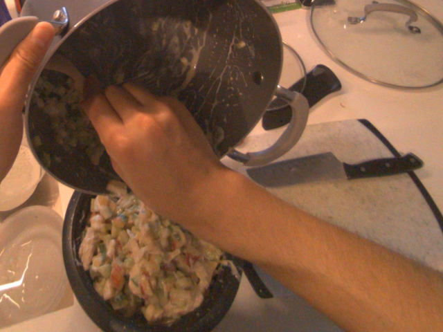
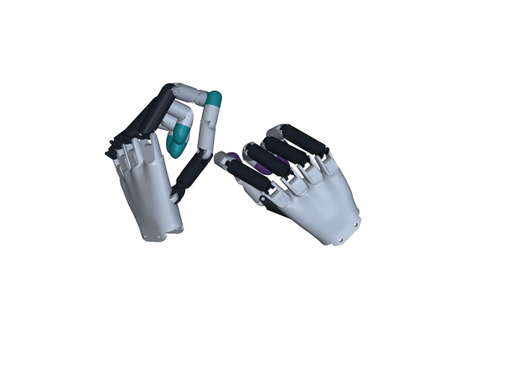

Egocentric human data
Aria Gen 2 recordings yield 109.6 hours, 3.69M frames, and 48.7k generated instructions. Contact segmentation and object grounding create training snippets; removing body geometry helps transfer human observations to the robot.


Capture geometry and motion together.
RGB and stereo images, tracked hand landmarks, and SLAM head pose are synchronized at 10 Hz.
Processing details
Matched views of one recorded frame. RGB/mask and cloud pairs have separate, consistent crops. No generated or inpainted experiment imagery.
Segment & annotate. S2M2 recovers stereo depth; SAM3 removes arms and hands. Hand–scene distance under 5 cm defines active contact; stable contact intervals become snippets. Qwen3-VL-8B annotates up to ten ordered frames per snippet.
Ground & normalize. Gemini 2.5 Flash supplies two object keypoints to initialize SAM3 tracking. Crop the scene to a 0.85 × 1.5 × 1.5 m workspace, reject depth beyond 1.7 m, and sample 5,000 points. Transform observations and actions into the last observed RGB-camera frame.